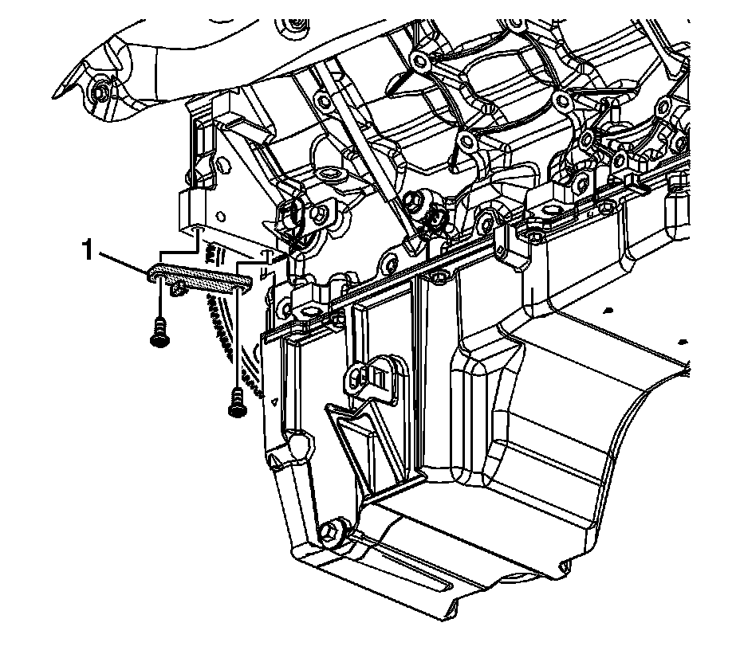
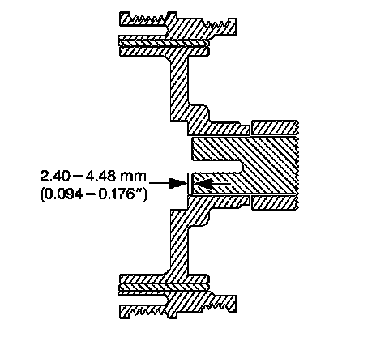

99. Crankshaft Balancer Installation
Crankshaft Balancer Installation
Tools Required
^ J 41478 Crankshaft Front Oil Seal Installer
^ J 41665 Crankshaft Balancer and Sprocket Installer
^ J 42386-A Flywheel Holding Tool
^ J 45059 Angle Meter

Notice: Refer to Fastener Notice.
Important:
^ The crankshaft balancer is balanced as an individual component. It is not necessary to mark the balancer prior to removal.
^ The crankshaft balancer installation and bolt tightening involves a 4 stage tightening process. The first pass ensures that the balancer is installed completely onto the crankshaft. The second, third, and fourth passes tighten the NEW bolt to the proper torque.
^ The used crankshaft balancer bolt is used only during the first pass of the balancer installation procedure. Install a NEW crankshaft balancer bolt and tighten as described in the second, third, and fourth passes of the balancer bolt tightening procedure.
^ Ensure the teeth of the tool engage the engine flywheel teeth.
Install the J 42386-A and bolts.
Use 1 M10 - 1.5 x 120 mm and 1 M10 - 1.5 x 45 mm bolt for proper tool operation.
Tighten the J 42386-A bolts to 50 N.m (37 lb ft).

Important: The balancer should be positioned onto the end of the crankshaft as straight as possible prior to tool installation.
1. Position the balancer (138) onto the end of the crankshaft.

2. Use the J 41665 and the J 41478 in order to install the balancer.
1. Assemble the J 41478 threaded rod, nut, washer and the J 41665 installer.
Insert the smaller end of the installer into the front of the balancer.
2. Use a wrench and hold the hex end of the threaded rod.
3. Use a second wrench and rotate the installation tool nut clockwise until the balancer is started onto the crankshaft.
4. Remove the tool and reverse the installation tool.
Position the larger end of the installer against the front of the balancer.
5. Use a wrench and hold the hex end of the threaded rod.
6. Use a second wrench and rotate the installation tool nut clockwise until the balancer is installed onto the crankshaft.
7. Remove the balancer installation tools.

3. Install the used crankshaft balancer bolt (139).
Tighten the crankshaft balancer bolt to 330 N.m (240 lb ft).
4. Remove the used crankshaft balancer bolt.

Important: The nose of the crankshaft should be recessed 2.4-4.48 mm (0.094-0.176 in) into the balancer bore.
5. Measure for a correctly installed balancer.
If the balancer is not installed to the proper dimensions, install the J 41665 and repeat the installation procedure.
6. Install the NEW crankshaft balancer bolt (139).
1. Tighten the crankshaft balancer bolt a first pass to 50 N.m (37 lb ft).
2. Tighten the crankshaft balancer bolt a second pass to 140 degrees using the J 45059.
7. Remove the J 42386-A.